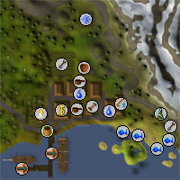
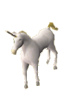
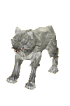

Catherby (Members)
Introduction | Location | Points of Interest | Personalities | Quests | Creatures of Catherby | Miscellaneous
Introduction

The dwarves have a slight presence here, too, but you must gain their trust before they will let you use their tunnels.
Location

West of Catherby is Seers' Village. South-east, across the White Wolf Mountains, is Falador, the capital of Asgarnia.
Heading more directly east from Catherby will bring you to Taverley, a sizeable town filled with druids, and standing over Taverley Dungeon.
Points of Interest

There is also a candlemaker, whose wares come in handy if you intend to descend into the depths below the surface of RuneScape.
Just south of town, on an island that can be reached through Taverley Dungeon, is the Water Obelisk, with which you can charge orbs.
Personalities

Vestri is the dwarf that guards the entrance to the dwarven tunnels beneath White Wolf Mountain, and is an essential contact if you wish to avoid the cold dangers of the mountain.
|
| Vestri can be found near the entrance to the dwarven tunnels north of Catherby. |
Quests
The following quest can be started in Catherby:
- Fishing Contest (Members)
Creatures of Catherby
|

The unicorns near Catherby, like other unicorns, are quite docile creatures, and unlikely to cause wandering adventurers any trouble. Less experienced travellers might prefer to get their thrills attacking weaker opponents, though.
|

The wolves that White Wolf Mountain is named for are dangerous beasts, and more than likely to cause trouble for people on their first journey across the mountains. They survive the cold of the altitude by gorging on the flesh of those foolish enough to come unprepared.
|
|
| The unicorns can be found in the woods north-west of town. | White wolves can be found on White Wolf Mountain, east of Catherby. |
Miscellaneous
- There is insect repellant and a jug of wine in the house north of the bank.
- Caleb, the baker, has a large stash in his house: a bucket of water, a burnt fish and two pie dishes.
- There is another bucket of water in the house east of Caleb's.

More articles in
Cities and Towns
|
|